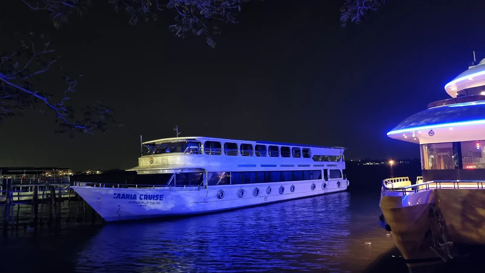
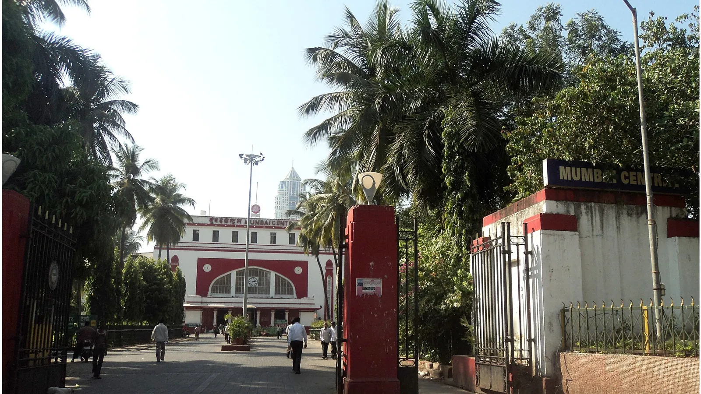
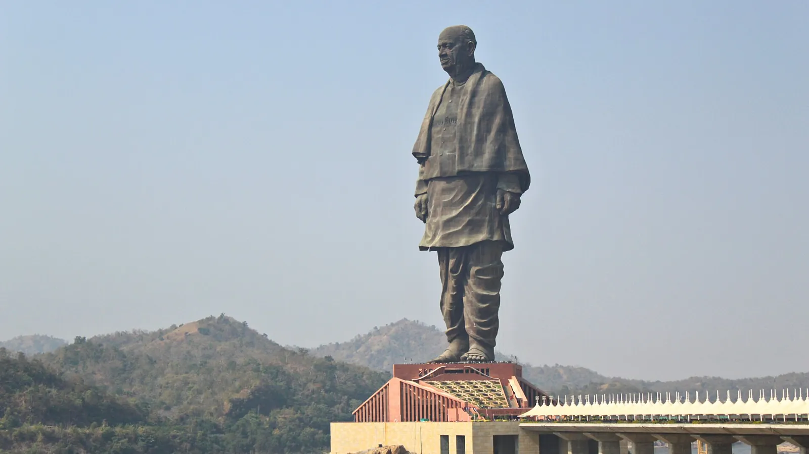
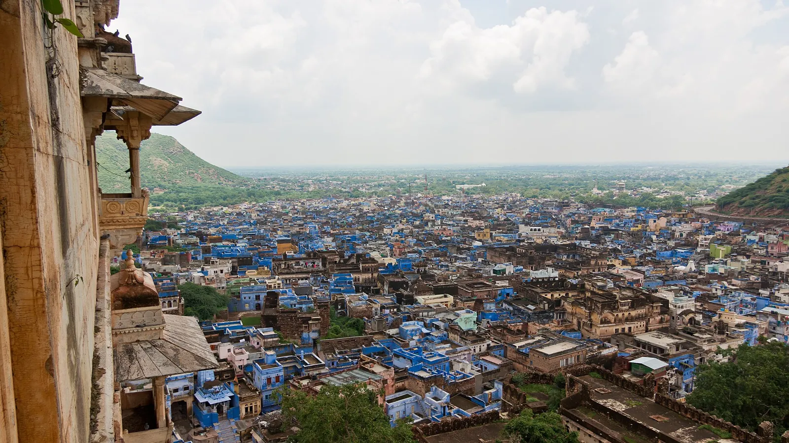
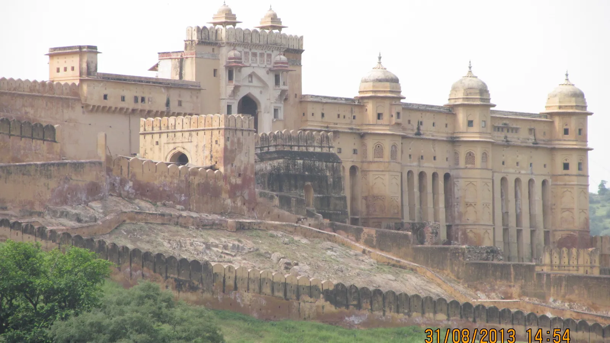
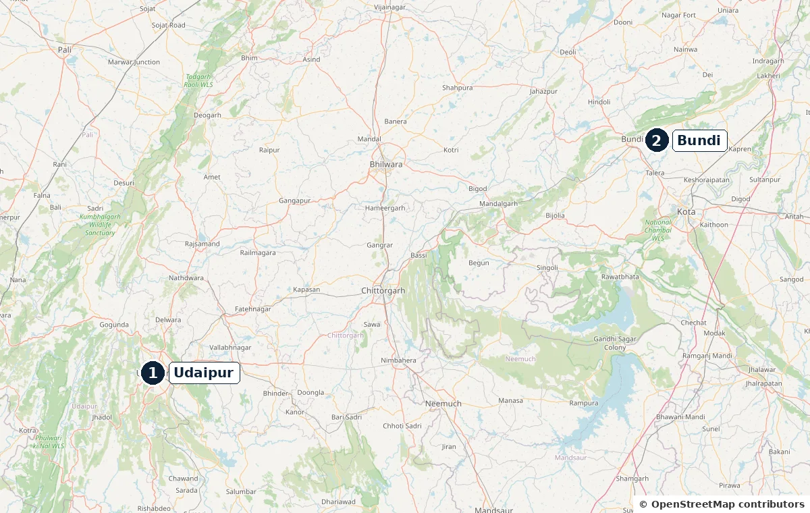

A route through India's west that most visitors miss. Mumbai and the Elephanta Caves, a fast train north and two nights beside the world's tallest statue, then the lakes of Udaipur, two slow days in Bundi with its royal family and painted palace, Amer Fort and a morning train to Delhi for an Old Delhi food walk. We changed three days of the original plan so that no day has more than about six hours in the car: the train now goes to Vadodara, nearer Kevadia; Kevadia to Udaipur is direct; and you sleep in Jaipur before the train to Delhi.
See it for yourself
Photos from the journey











Where you go
The journey on one map

MumbaiElephanta CavesVadodaraKevadiaUdaipurBundiAmer FortJaipurDelhi
Day by day, in short
Daily travel brief
Distances are by road for the whole day. The full plan with timings comes with your detailed itinerary.
-
1
Land in Mumbai and an evening street-food walk
- Marine Drive and Girgaum Chowpatty: drink only sealed bottled water and choose stalls cooking in front of you.
- Jet lag is real.
-
2
Private Mumbai: the Gateway, Haji Ali and a harbour boat
- Haji Ali Dargah: cover arms, legs and head.
- Chor Bazaar: closed on Fridays.
-
3
Elephanta Caves by ferry, then Juhu
- Ferry to Elephanta: the caves are closed on Mondays.
- Elephanta Caves with a guide: monkeys snatch food and bags on the steps.
-
4
Fast train to Vadodara and on to Kevadia
- Board the train to Vadodara: be at the platform 30 minutes early.
- We changed this day: Gandhinagar is 4 hours' drive from Kevadia, Vadodara only 2.
-
5
The Statue of Unity, the dam and the Ayurveda garden
- Statue of Unity viewing gallery: closed on Mondays.
- Kevadia has cycles and e-rickshaws to move between the parks.
-
6
Kevadia to the lakes of Udaipur
- The original plan went via Ahmedabad, which makes this about 10 hours.
-
7
Udaipur: sunrise, the City Palace and Lake Pichola
- Buy miniature paintings in the lanes around Jagdish Temple, but compare prices first.
-
8
Into Bundi and an evening with the royal family
- Bundi is small and slow: the best place on this trip to rest.
-
9
Taragarh Fort, the painted palace and a sunset hike
- Taragarh Fort and Garh Palace: monkeys are bold in the fort.
- Take a torch for the walk down.
-
10
Bundi to Jaipur and Amer Fort
- Amer Fort with a guide: walk or take a jeep up; we do not recommend the elephant rides.
- We added this night in Jaipur.
-
11
Morning train to Delhi and an Old Delhi food walk
New Delhi Railway Station Red Fort Jama Masjid Delhi Paranthe Wali Gali
- Red Fort and Jama Masjid: cover arms and legs at Jama Masjid.
- Old Delhi lanes are crowded.
-
12
Fly home from Delhi
- Transfer to Delhi airport: leave 4 hours before an international flight.
- Pack spices and sweets in checked baggage.
Local know-how
Travel hacks from our desk
UPI, cards and cash
UPI works almost everywhere, even at small stalls. Keep some cash in INR 100 and 200 notes for temples, parking, tips and places where the network is weak.
Temple and shrine etiquette
Cover shoulders and knees. Remove shoes where asked, and carry socks for hot stone floors. Leather belts and bags are not allowed inside some Jain and Hindu temples. Ask before photographing people and inside shrines.
Water and street food
Drink sealed bottled or filtered water only. Choose busy stalls where food is cooked in front of you, and skip cut fruit and ice from roadside stalls.
Driving times
Indian roads are slower than the kilometres suggest: plan on 40 to 50 km an hour on highways and much less in hills and towns. Your driver's breaks and meal stops are built into the timings.
Plugs and tipping
Plugs are Indian three-pin and two-pin, 230 volts. Tipping drivers and guides about INR 300 to 500 a day is appreciated.
When to go
Best time to visit for this journey
November or February: cool and dry, without the Christmas crowds.
October to March. Avoid April to June, when Gujarat and Rajasthan pass 40°. In the monsoon the Elephanta ferry can stop and Kevadia's dam is at its fullest.
The package
What's included
Included
- 11 nights with breakfast
- Private car with driver for 12 days, with airport transfers
- Guide in your language for 9 days
- Mumbai to Vadodara and Jaipur to Delhi train tickets
- City tours, food walks and activities as described
- A local SIM card for each traveller
- 24/7 support from Blue Diamond Voyage
Not included
- International flights and India e-Visa
- Entry fees, ferries and boat rides
- Meals not marked included
- Wellness treatments
- Travel insurance
The detailed itinerary
Some journeys are planned. Ours are crafted.
The full 12-day plan is ready: hour-by-hour timings, drive times, temple dress codes, food for your diet and a route map for every day. Tell us your dates and your city, and we'll send it to you on WhatsApp, shaped around you.
- Hour-by-hour timings
- A route map for every day
- Hotel and room details
- Visa and entry steps
- Vegetarian and Jain dining
24/7 travel desk+91 97148 59797+91 98242 21400
Photo and map credits
- Marine Drive: Ganesh Mohan T, CC BY-SA 4.0, via Wikimedia Commons
- Gateway of India: iMahesh, CC BY-SA 4.0, via Wikimedia Commons
- Gateway of India: iMahesh, CC BY-SA 4.0, via Wikimedia Commons
- Mumbai Central: தகவலுழவன், CC BY-SA 3.0, via Wikimedia Commons
- Kevadia: Prasad dhage, CC BY-SA 4.0, via Wikimedia Commons
- City Palace Udaipur: Hirumon, CC BY 3.0, via Wikimedia Commons
- Bundi: Antoine Taveneaux, CC BY-SA 3.0, via Wikimedia Commons
- Taragarh Fort Bundi: Justin Morgan from Richmond, Virginia, USA, CC BY-SA 2.0, via Wikimedia Commons
- Amer Fort: S Sundararajan, CC BY-SA 3.0, via Wikimedia Commons
- Jaipur Junction: This illustration was made by Peter Potrowl. Please credit this with : © Peter P, CC BY-SA 4.0, via Wikimedia Commons
- Indira Gandhi International Airport: Wasiul Bahar, CC BY-SA 4.0, via Wikimedia Commons
- Maps: © OpenStreetMap contributors; road routes by OSRM.